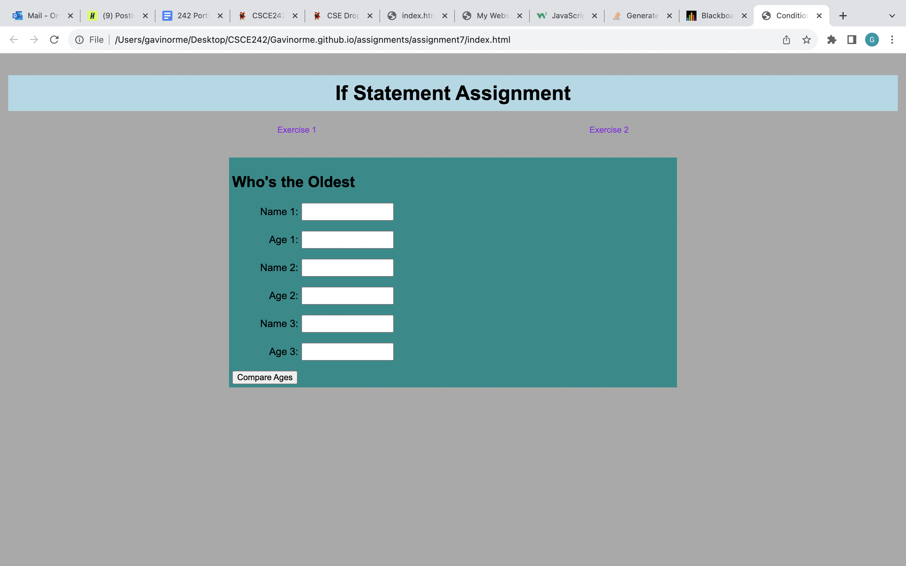

Project 1

In this assignment I made a webpage that incorporates javascript so that pictures can show and dance when clicked.
Project 2
In this assignment I made a webpage that compares ages between three people from oldest to youngest and also shows funds raised using a graphic.
Project 3
In this assignment I made a webpage that has a walking and then running man across the screen and also shows funds raised using a graphic.
Project 4
In this assignment I made a webpage that loops through 5 powerful quotes and makes an animated rainbow with a pot of gold at the end.